Meet the two currents.
Welcome to Atolls. Two loops share a sea, but each has its own course. Guide A in red and B in cyan; let them meet, separate and find their way back.
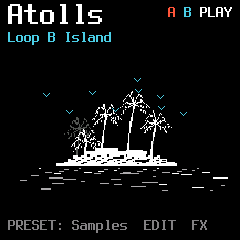
Shape the currents from HOME. Use ALGO to choose Loop A or Loop B. Click a numbered control below the display to see its value window; these are example values.
1 Start
Move the beginning of the selected loop.
2 Size
Change the length of its playback window.
3 Speed
Change its playback speed and direction.
4 Level
Set the selected loop’s level.
Atolls and Bioma are independent machines. Hold HOME → Machine to move between them.
Together, or on their own.
A short PLAY/STOP press starts both loops when both are stopped. If either is running, the same short press stops both. Hold PLAY for the floating Transport panel.
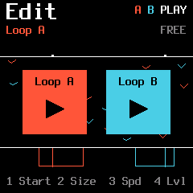
Releasing PLAY closes the panel and returns to your previous screen. The hold gesture does not also trigger the short-press action.
Find your source waters.
Turn PRESET to the Sample page. Each loop can choose one of four stored slots. They can share a sample or use different sources.
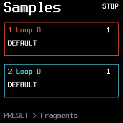
- 1Loop A slot
Choose the sample slot feeding Loop A.
- 2Loop B slot
Choose the sample slot feeding Loop B.
Saved slots remain on the FM-1. An empty source falls back to the built-in sound. Uploading a new sample replaces that slot; Landing destinations are associated with their sample.
Catch a small piece of the sea.
The keyboard offers Fragments of the selected currents: divisions, speeds and repeat gestures you can play from any page. A loop can be stopped and still answer your Fragment key.
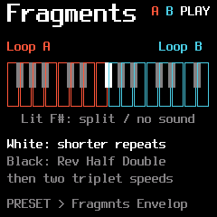
A stopped loop’s Fragment is temporary: it does not leave Play enabled. With a stopped loop, Reverse alone prepares the direction; audio begins when you press a Fragment. Each bank keeps its mappings.
Find the gesture under your fingers.
The left bank controls A; the right bank controls B. Select a key below to read its gesture. The first black key in each bank is Reverse.
Loop A / F#3 — Reverse
Temporarily reverse the current direction. Hold this key with another Fragment to keep its division while reversing it. If the loop is stopped, Reverse alone prepares the direction; press a Fragment to start the sound.
The centre F#4 is an illuminated, silent divider. White keys move from longer to shorter repeats. The other black keys offer Half speed, Double speed, 1/8T and 1/16T triplets. The two banks have different black-key spacing, just like the FM-1 keyboard.
Let a Fragment leave gently.
Turn PRESET again from the Fragments page to set the Attack and Release of Fragment gestures. This is separate from the fades inside the continuously repeating loop.
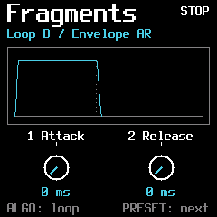
- 1Attack
How gently a pressed Fragment enters.
- 2Release
How long it takes to leave after the key is released.
Use ALGO to edit the other bank. The two Fragment envelopes are independent.
Soften the edges.
Press ENV to open the selected loop’s fades and filter. These fades repeat within each loop window: they are not a separate note envelope.
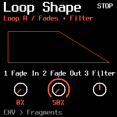
- 1Fade In
Turn clockwise to lengthen the entrance fade, up to half the loop window.
- 2Fade Out
Turn counterclockwise to lengthen the exit fade. Turn clockwise to shorten it.
- 3Filter
A dedicated bipolar filter for this loop. Centre is open; left is low-pass and right is high-pass.
The graph shows the fades inside the window. The selected loop keeps its own settings; changing A does not reshape B.
Shape the current.
Press EDIT. This is the shoreline of a loop: where it begins, how much it contains, how fast it moves and how strongly you hear it. Use ALGO to choose A or B.
With the same sample in both loops, both playback windows share the waveform. Red is Loop A; cyan is Loop B.
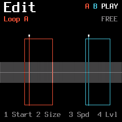
- 1Start
Move the beginning of the selected loop window.
- 2Size
Change the length of its window.
- 3Speed
Change playback speed and direction. Negative speed plays backwards; zero holds the read position.
- 4Level
Set the selected loop’s level.
The status at the top tells you which currents are playing. The Free / Sync summary describes the selected loop’s timing.
Give it a tide to follow.
Press EDIT again to open Sync over the waveform. The loop restarts at its Start on the chosen clock division. This is retriggering, not time stretching.
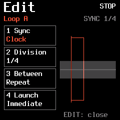
- 1Sync
Free follows the sample’s own length. Clock uses the global internal or external clock.
- 2Division
The musical interval between clock-triggered restarts.
- 3Between
Repeat fills the interval by looping again; Gate waits in silence if the sample ends early.
- 4Launch
Choose Immediate, Next Beat or Next Bar for the first launch.
A waiting launch displays WAIT. Stopping a loop does not stop the shared clock. Press EDIT again to close Sync.
A reason to move.
Press ARP for Flock. It decides how far a loop may travel and when it should consider its next destination.
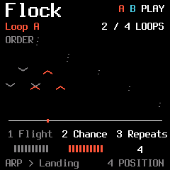
- 1Flight
The reach of a free Start-position jump. In Points or Order mode, the saved destinations take over and Flight is inactive.
- 2Chance
The probability of moving when an opportunity arrives.
- 3Repeats
How many turns to wait before evaluating a move.
- 4Position / Pitch
Choose position travel or the available pitch variation mode. Landing’s saved destinations belong to Position.
In Clock sync, turns follow the loop’s selected clock divisions. In Free, they follow real completed loop windows. Fragment retriggers do not count as complete turns.
Mark places to return to.
Press ARP again. Landing stores eight Start positions for the selected loop and sample. Saving a destination does not jump there immediately.
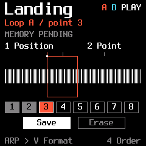
- 1Position
Prepare a candidate Start position within the sample.
- 2Point
Choose one of the eight destination slots.
- 4Free / Points / Order
Free chooses a position within Flight. Points randomly chooses a saved destination, avoiding the previous one when possible. Order visits filled slots in sequence.
SELECT highlights Save or Erase; SEL executes it. Empty slots are skipped in Order. With no saved points, Points and Order show NO POINTS and keep the current position. Size and Speed are not stored in a point.
Let one current lead the other.
Press ARP again for V Format. The selected loop is the follower: Loop A / triggered by B means that B leads and A responds. Each direction keeps its own settings.
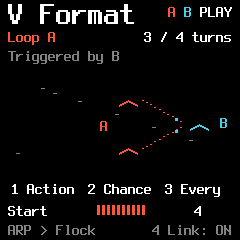
- 1Action
Start moves to the next Landing destination and restarts. Reverse also follows Landing, then changes direction.
- 2Chance
The probability that the follower responds at an opportunity.
- 3Every
How many turns of the other loop to wait.
- 4Link
Enable or disable this response link.
Landing’s Free, Points and Order determine the destination. Free uses Flight’s reach, which remains editable; the destination’s autonomous Flock timing is off while linked. A stopped follower stays stopped. Clock-synced conductors count their clock divisions; Free conductors count real loop ends. Fragments take priority; actions do not form instant A ↔ B feedback chains.
Small movements around a point.
Press LFO to add motion to a parameter. The modulation works around its selected base value, rather than forgetting the setting you chose.
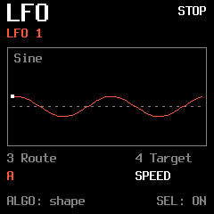
- 1Depth
How far the modulation moves from the base value.
- 2Speed
The speed of that movement.
- 3Route
Send it to A, B or both.
- 4Target
Choose Speed, Level, Pan or Start.
SEL starts or pauses the LFO. ALGO selects its waveform: Sine, Triangle, Sample & Hold, Saw Up, Saw Down or Drift. Press LFO again to edit the other LFO.
Draw a journey.
Press SEQ to visit Motion. Record gestures over Start, Size, Speed and Level, then let them trace the same path again.
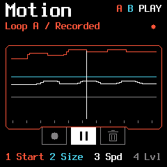
- 1Start
Draw a changing loop beginning.
- 2Size
Draw the changing length.
- 3Speed
Draw speed and direction.
- 4Level
Draw the changing level.
SELECT highlights Record, Play/Pause or Erase; SEL executes it. The clip belongs to the loop it was recorded for; the screen tells you if you are editing the other loop.
Give each current its place.
GLO brings together gain, stereo placement and the shared clock.
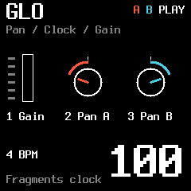
- 1Gain
A global boost for quieter source material. Begin modestly and listen to the result.
- 2Pan A
Place Loop A in the stereo field.
- 3Pan B
Place Loop B independently.
- 4BPM
Set the internal clock tempo, or read EXT when USB/TRS clock is selected.
Hold HOME → Settings to choose MIDI CLOCK OFF, USB or TRS. Internal BPM editing is unavailable while an external clock is selected.
Choose which current meets the effects.
Atolls shares one effects chain. In FX, ALGO chooses A, B or A+B as the source. A loop outside that route remains dry.
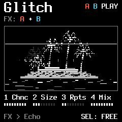
The same three FX pages are available in both machines. ALGO chooses the effect source here; it does not change the loop selected in Edit.
A flicker in the landscape.
Press FX to enter Glitch. A moment of sound can catch, repeat and become an unexpected rhythmic detail.
- 1Chance
How often a Glitch opportunity becomes an event.
- 2Size
The captured slice length in milliseconds.
- 3Repeats
How many times the slice repeats.
- 4Mix
Blend the effect with the incoming sound.
Sync quantizes the trigger opportunities to the quarter-note beat of the internal or selected MIDI clock. Size stays free in milliseconds. If a Glitch is still active, a new opportunity is skipped; it is not queued.
Traces, wear and echoes.
Press FX again. Damage adds worn edges, while Delay leaves a trace of the sound behind it.
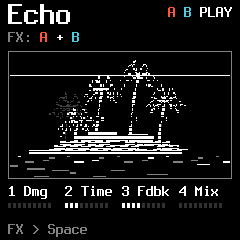
- 1Damage
Introduce degradation and subtle crackles.
- 2Time
Set the delay interval.
- 3Feedback
How much of each echo returns to the delay.
- 4Delay Mix
Set the amount of delayed sound in the mix.
The route chosen with ALGO sends A, B or both to the shared effects. The other loop remains dry.
Let the island linger.
Press FX again. Shape the spectrum, give the scene a room and let the tape soften its edges.
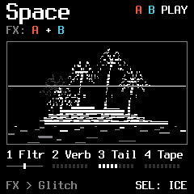
- 1Filter
Centre is open. Turn left for a low-pass response, or right for high-pass.
- 2Reverb
Set the reverb amount.
- 3Decay
Set the reverb’s lingering time.
- 4Tape
Introduce tape character and movement.
FX cycles Glitch → Echo → Space. SELECT stays within FX while this section is open. Reverb and ICE are alternative modes of the same reverb stage.
Invite another instrument.
In Settings, MIDI CLOCK and MIDI CONTROL are separate choices. You can follow an external rhythm while deciding independently where performance commands are accepted.
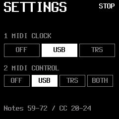
Follow an external clock.
- Hold HOME, turn SELECT to Settings, then press SEL.
- Turn knob 1 MIDI CLOCK to USB or TRS, matching your clock connection. OFF uses ReVo’s internal BPM.
- Enable MIDI clock output on the sending instrument or DAW. Keep that clock running while you play.
- Return to Atolls. Press EDIT again to open Sync, choose Clock, then set the loop’s Division. Use ALGO to configure the other loop independently.
Clock and performance control are independent. Knob 2 MIDI CONTROL selects USB, TRS or BOTH for incoming notes and CCs. Leave it OFF if you only want external timing.
Channels 1 / 2 address A / B. Notes 60–72 play Fragment functions; Note Off releases them. CC20 Start, CC21 Size, CC22 Speed, CC23 Level, CC24 Pan. On channel 3, CC20 controls the global gain. CC123 releases held MIDI Fragment notes.